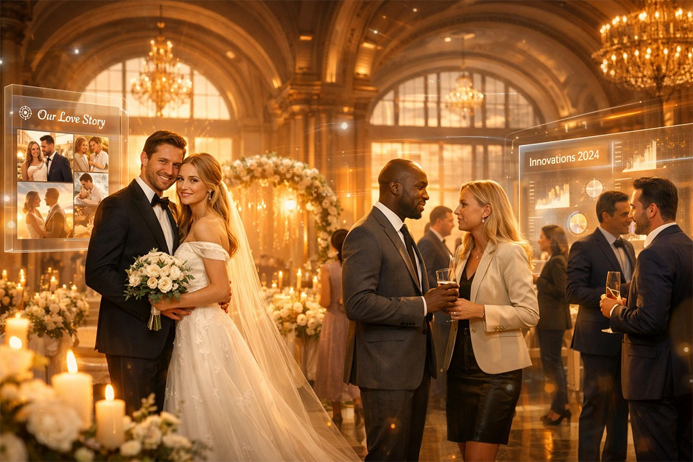

2026Why AI-Native Experiences Are Becoming the Most Admired Part of Modern Events
This isn’t sci-fi. This is the new reality of AI-native venues. And according to The Knot’s 2026 Real Wedding Study and major corporate event reports, clients on both sides are not just accepting it — they’re actively choosing venues that offer it. Here’s exactly why, and how you can position your venue at the front of the curve.
“2026 isn’t about replacing the heart of your venue — it’s about amplifying it.”
Why Couples Now Admire (and Expect) AI-Native Wedding Experiences
- AI adoption among engaged couples nearly doubled to 36% in one year (The Knot 2026).
- They love instant inspiration, mood-board generation, vow drafting, timeline creation, budget forecasting, and hyper-personalised vendor and venue matching.
- Real magic: AI + human touch = “It feels like the venue already knows us.”
- Twilight and intimate weddings combined with new outdoor ceremony freedoms allow AI to help couples visualise everything perfectly before they even visit.
- Result: Faster decisions, fewer no-shows, and a higher emotional connection to your space.
Why Corporate Planners & Companies Are Obsessed with AI-Native Events
- AI has moved from “experiment” to “operational infrastructure” in 2026.
- Planners rave about predictive budgeting, instant RFP comparison, personalised agendas, smart matchmaking, real-time sentiment analysis, and automated post-event reports.
- 66% of professionals say AI frees them for high-value strategy (Cvent 2026 Planner Sourcing Report).
- Corporates love venues offering seamless hybrid tech, sustainability tracking, and immersive personalisation — making their events look forward-thinking and effortless.
- Your venue becomes the smart choice that saves time and impresses decision-makers.
The Venue Owner Advantage — How AI-Native Transforms Your Business
- Bookings explode: AI sales assistants reply 24/7 in your brand voice, nurture leads, schedule tours, and reduce ghosting.
- Operations simplify: Predictive staffing, dynamic pricing, energy optimisation, and maintenance alerts lower costs and support happier teams.
- Guest delight multiplies: Real-time custom lighting, personalised welcome messages, AI-generated seating plans, and photo backdrops make guests feel seen.
- Data becomes your superpower: Understand exactly what couples and corporates want and optimise packages and upsells.
- Venues using AI-native tools in 2026 are already seeing higher occupancy and premium rates.
Forward-Looking 2026–2030 Transformation
- AI-native becomes built-in, not bolted-on — table stakes for venues.
- Agentic AI autonomously handles entire workflows while you focus on hospitality.
- Seamless blending of physical and digital experiences through AR previews, live translation, and sentiment-aware environments.
- Ethical, human-first AI focused on transparency, data privacy, and augmenting human magic.
- Sustainability and wellness integrated via AI through carbon tracking and personalised attendee wellbeing.
Practical First Steps for Any Venue (Weekend Action List)
- Start small with an AI chat widget that answers FAQs in your tone.
- Explore AI-native platforms for operations and venue assistance.
- Offer one AI-powered guest experience such as virtual tours or personalised welcome videos.
- Train your team — AI handles repetition, humans deliver the soul.
- Measure and celebrate: Track inquiry-to-booking time and guest feedback.
Conclusion
- 2026 isn’t about replacing the heart of your venue — it’s about amplifying it. The venues that embrace AI-native experiences today will be the ones couples dream about and corporates fight to book tomorrow
Take a coffee this weekend, explore one new AI tool, and picture your space running smarter, warmer, and busier than ever. The future of events is intelligent, personal, and deeply human — and it starts with the venues brave enough to lead.